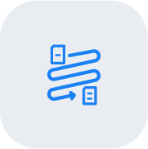
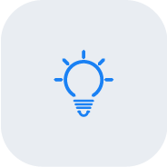

Rhapsody has one official icon set: the FY27 icon library, 271 outline icons drawn for the brand, in the Brand Package FY27 folder on SharePoint, open to everyone at Rhapsody: Rhapsody icon library. Use these icons, as supplied, for every feature, benefit, and diagram icon.
Don’t draw your own icons, redraw a library icon, or pull from another set (Lucide, Feather, Material, stock). If nothing in the library fits, use the closest match and ask the brand team for a new icon.
Every icon comes in four versions, each as SVG (web and digital) and PNG (PowerPoint, Word, and email). Pick the version for the ground it sits on.
| Folder | Looks like | Use on |
|---|---|---|
| Light-background tile | Rhapsody Blue glyph in a gray-blue tile | Feature and benefit icons on white, light gray, and gray-blue |
| Dark-background tile | Light-blue glyph in a white tile at 10% | Feature and benefit icons on navy |
| Color (blue) | Rhapsody Blue glyph, no tile | Light grounds where a tile won’t fit: inline with text, lists, diagrams |
| Color (White) | White glyph, no tile | Navy or Rhapsody Blue grounds without a tile, such as icon chains on blue emphasis bands |


A sample of the light-background tiles. Browse all 271 in the library.
Feature and benefit icons always sit in a library tile, light or dark to match the ground. Use the tile files as supplied; don’t invent tile colors or set feature icons without a tile. Two documented exceptions: the round icon badges on the hero badge ring (see Hero badge graphics), and white icon chains on Rhapsody Blue emphasis bands (see Web pages), which use the Color (White) version.
tile on light (glyph blue) or white at 10% opacity on navy (glyph lblue), with the library glyph centered at about 20px.Yes/no indicators in comparison tables are the exception to the tile treatment: a check in Rhapsody Blue (#1A81F4) and a cross in muted gray (#7E858C), both at stroke-width 3 for weight. These are UI marks, not decorative icons, and don’t sit in tiles.
Retired: the earlier hand-drawn reference set (1.7 stroke) and the legacy two-color icons.